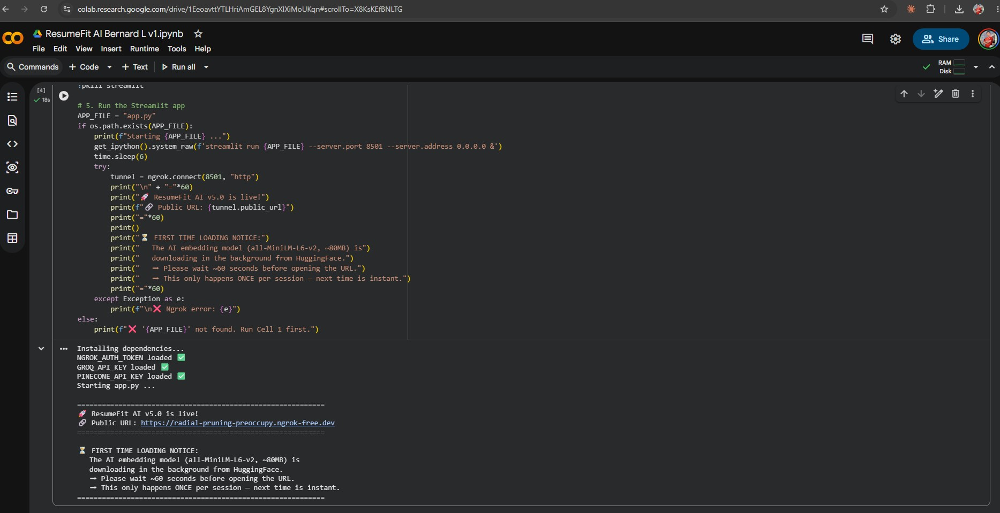
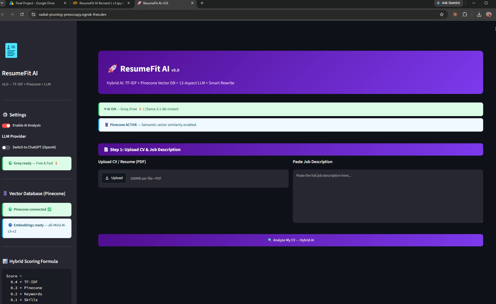
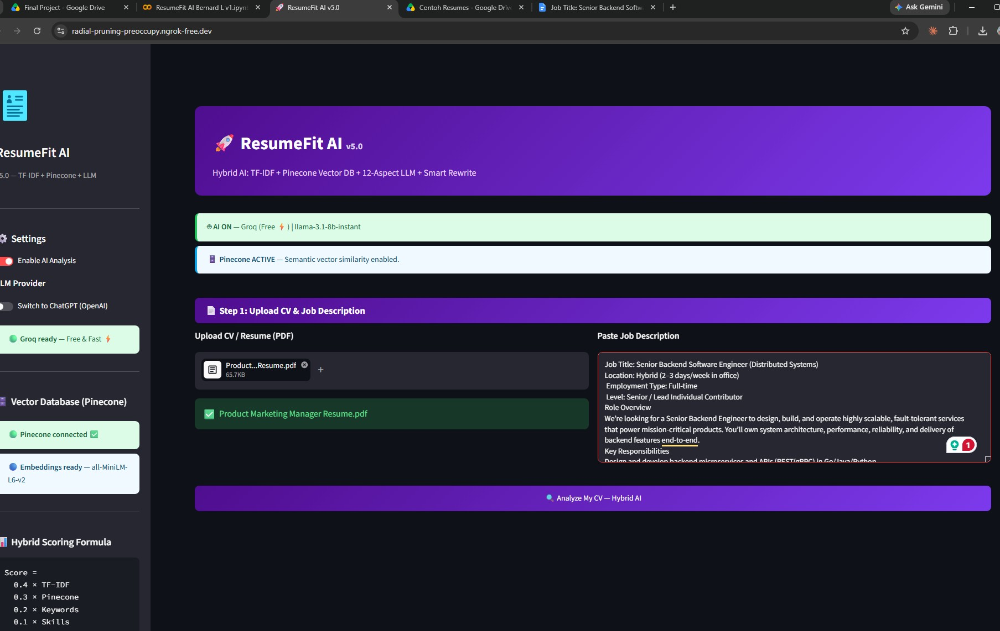
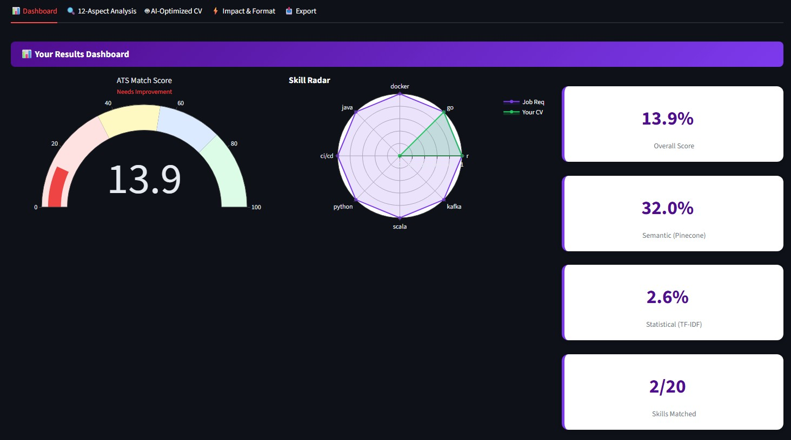
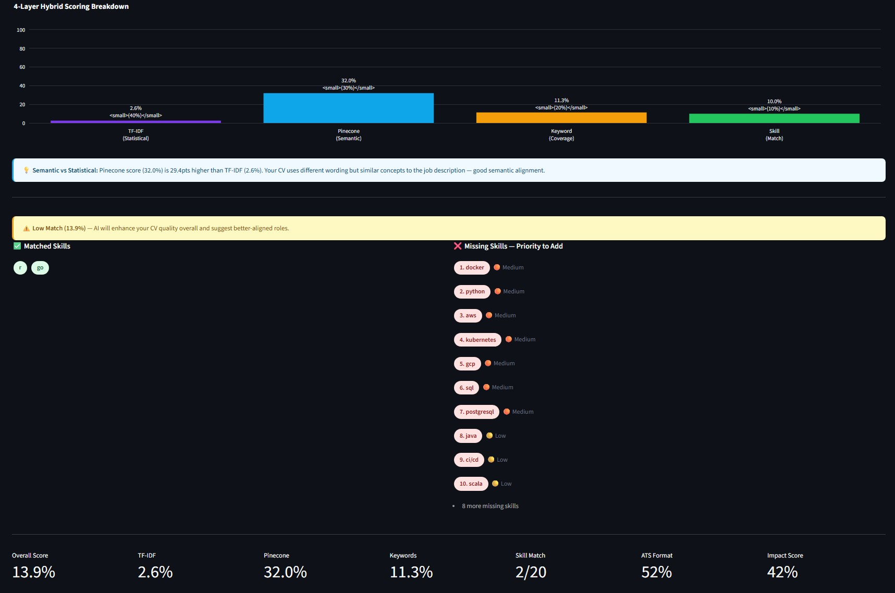
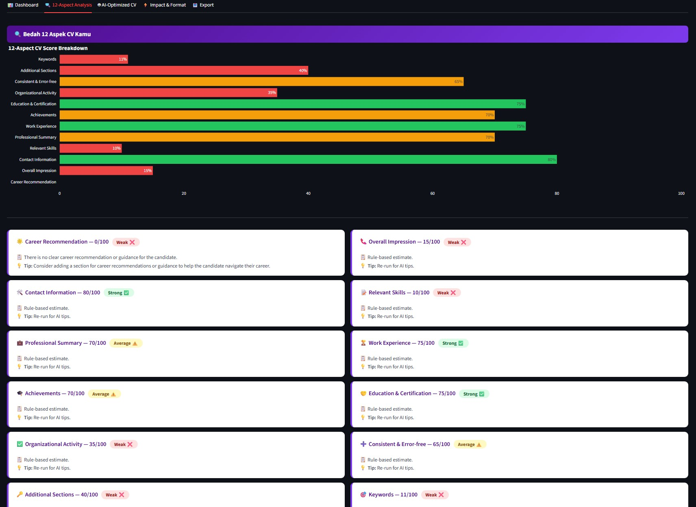
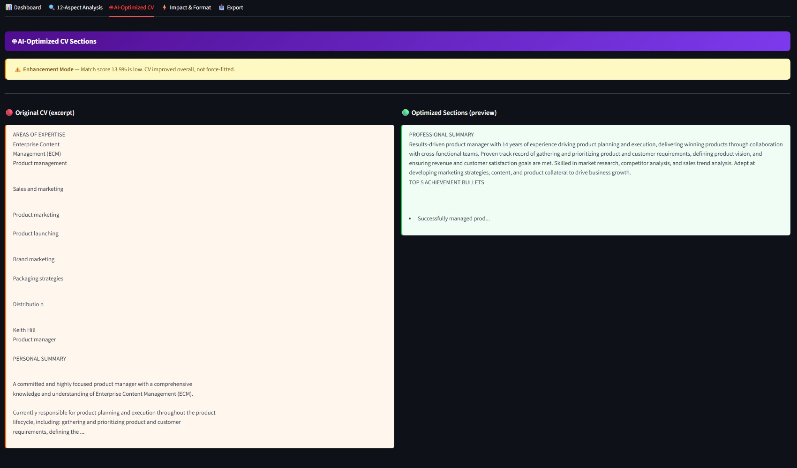
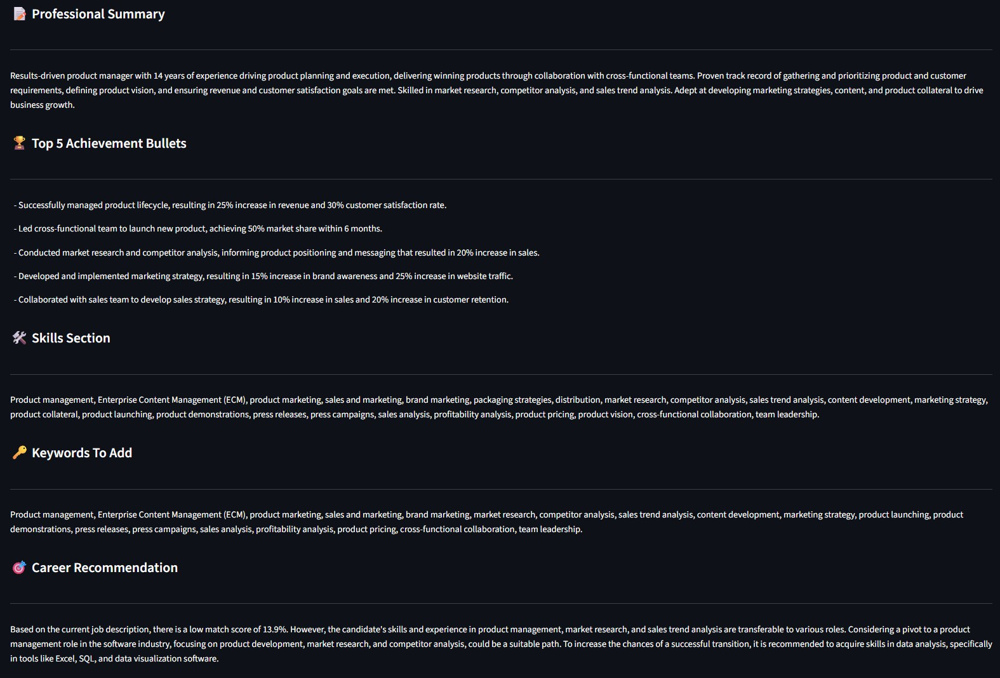
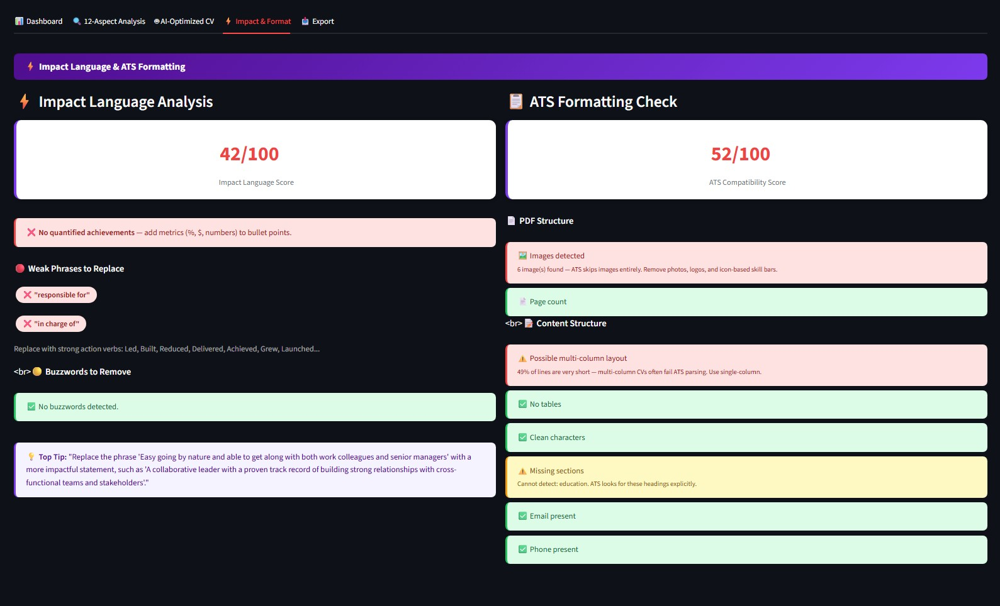
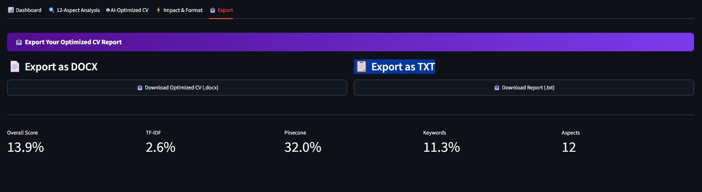

All API keys loaded, Streamlit started, ngrok tunnel printed in seconds

ResumeFit AI v5.0 — Groq AI ON, Pinecone ACTIVE, Hybrid Scoring Formula visible in sidebar

Step 1: Upload a CV PDF and paste the full job description, then click Analyze

ATS Match Score gauge, Skill Radar chart (Job Req vs. Your CV), and per-layer sub-scores

Bar chart showing TF-IDF / Pinecone / Keyword / Skill weights, plus prioritized missing skill list

LLM-powered breakdown across 12 quality dimensions — each scored and flagged as Strong / Average / Weak

Original CV excerpt (left) vs. AI-optimized version (right) — Enhancement Mode active for low-match CVs

Rewritten Professional Summary, Top 5 Achievement Bullets, Keywords to Add, and Career Recommendation

Weak phrases detected, ATS formatting score, image/layout warnings, and contact info check

Download full optimized CV report as .docx or .txt
For Coaches & Reviewers: The app runs on Google Colab + ngrok (see instructions below).
A live demo session was recorded during submission — seeResumeFit-AI Final.pdffor screenshots and the demo URL.
To run the demo yourself (takes ~2 minutes):
ResumeFit AI Bernard L v1.ipynb in Google ColabSample CVs for testing are included in the
Contoh Resumes/folder.
ResumeFit AI is an end-to-end AI application that helps job seekers understand exactly why their CV isn't passing ATS (Applicant Tracking System) filters — and gives them actionable steps to fix it.
Most job seekers send generic CVs without knowing which keywords are missing, which skills are misaligned, or why the wording isn't landing. ResumeFit AI solves this with a 4-layer hybrid AI scoring engine that combines statistical NLP, semantic vector search, and generative AI into a single, easy-to-use app.
| Feature | Description |
|---|---|
| 🎯 ATS Match Score | Overall CV-to-JD compatibility score (0–100%) |
| 📊 4-Layer Hybrid Scoring | TF-IDF + Pinecone Semantic + Keyword Coverage + Skill Match |
| 🗄️ Vector Database Matching | Semantic similarity via Pinecone — captures meaning, not just keywords |
| 🔍 12-Aspect CV Evaluation | LLM-powered deep analysis across 12 quality dimensions |
| ⚡ Impact Language Analysis | Detects weak verbs, buzzwords, and missing quantified achievements |
| 📋 ATS Formatting Check | Flags multi-column layouts, images, tables, missing sections |
| 🤖 AI CV Rewrite | Smart rewrite: tailors CV if match ≥60%, enhances overall quality if <60% |
| 📥 Export | Download full report as .docx or .txt |
┌─────────────────────────────────────────────────────────┐ │ ResumeFit AI │ │ │ │ INPUT │ │ ┌──────────┐ ┌──────────────────┐ │ │ │ CV (PDF) │ │ Job Description │ │ │ └────┬─────┘ └────────┬─────────┘ │ │ │ │ │ │ LAYER 2: Processing │ │ │ ┌────▼─────────────────▼─────────┐ │ │ │ PDF Extractor → Text Cleaner │ │ │ │ Skill Extractor → Keywords │ │ │ └──────────────┬─────────────────┘ │ │ │ │ │ LAYER 3: Analysis Engine │ │ ┌──────────────▼─────────────────────────────────┐ │ │ │ Statistical │ Semantic │ Rule-Based │ │ │ │ TF-IDF │ Pinecone │ Keyword/Skill │ │ │ │ Cosine Sim │ Embeddings │ Gap Detection │ │ │ └──────────┬────┴──────┬───────┴──────────────────┘ │ │ │ Program │ │ │ │ Ingestion │ Model Embedding │ │ └────────► Vector Database (Pinecone) │ │ │ │ LLM Layer (Groq / OpenAI) │ │ ┌─────────────────────────────────────────────────┐ │ │ │ 12-Aspect Evaluation │ Impact Language │ │ │ │ CV Rewrite Suggestion │ Career Recommendation │ │ │ └─────────────────────────────────────────────────┘ │ │ │ │ LAYER 4: Output │ │ Dashboard │ 12-Aspect │ AI Rewrite │ Format Check │ Export │ └─────────────────────────────────────────────────────────┘
ResumeFit AI uses a weighted hybrid formula combining 4 layers:
| Component | Weight | Method |
|---|---|---|
| TF-IDF Cosine Similarity | 40% | sklearn TfidfVectorizer + cosine similarity |
| Pinecone Semantic Similarity | 30% | sentence-transformers embeddings + Pinecone vector search |
| Keyword Coverage | 20% | |KJ ∩ KR| / |KJ| × 100 |
| Skill Match | 10% | Rule-based dictionary matching |
The weights were deliberately chosen to mirror how real-world ATS systems actually work, not to maximise pure semantic accuracy:
This is a deliberate design decision to simulate ATS behaviour accurately, not a limitation.
| Category | Technology |
|---|---|
| Language | Python 3.10+ |
| UI | Streamlit |
| Statistical NLP | Scikit-learn (TF-IDF, Cosine Similarity) |
| Semantic Search | Sentence-Transformers (all-MiniLM-L6-v2) |
| Vector Database | Pinecone (Serverless) |
| LLM | Groq (llama-3.1-8b-instant) — free default |
| LLM (optional) | OpenAI (gpt-3.5-turbo, gpt-4o-mini, gpt-4o) |
| PDF Extraction | PyPDF |
| Visualization | Plotly (gauge, radar, bar charts) |
| Export | python-docx |
| Deployment | Google Colab + ngrok |
git clone https://github.com/benloImA0G/AI-Boot-Camp-batch-11.gitAll 3 keys are free. Sign up takes under 2 minutes each.
In Google Colab → click the 🔑 Secrets icon (left sidebar) → add:
| Secret Name | Where to Get It | Required? |
|---|---|---|
NGROK_AUTH_TOKEN | ngrok.com → Sign up → Your Authtoken | ✅ Yes |
GROQ_API_KEY | console.groq.com → API Keys → Create | ✅ Yes (free) |
PINECONE_API_KEY | pinecone.io → Projects → API Keys | ✅ Yes (free) |
ResumeFit AI Bernard L v1.ipynb in Google Colabapp.py to the Colab environmentThe first run downloads the embedding model (~80MB from HuggingFace). Wait ~60 seconds before opening the URL.
Use the sample CVs included in Contoh Resumes/:
| # | Aspect | Category |
|---|---|---|
| 1 | Overall Impression | General |
| 2 | Contact Information | General |
| 3 | Consistent & Error-free | General |
| 4 | Relevant Skills | Competency |
| 5 | Professional Summary | Competency |
| 6 | Work Experience | Competency |
| 7 | Achievements | Competency |
| 8 | Education & Certification | Background |
| 9 | Organizational Activity | Background |
| 10 | Additional Sections | Background |
| 11 | Keywords Optimization | ATS |
| 12 | Career Recommendation | ATS |
| # | Challenge | Solution | Learning |
|---|---|---|---|
| 1 | Pinecone cold-start latency — vector ingestion caused noticeable delays with no user feedback | Added real-time spinners and status messages during each ingestion step | User feedback during processing matters as much as final accuracy |
| 2 | Inconsistent LLM output formatting — Groq responses often broke the parser | Strict prompt engineering with exact labeled output templates (ASPECT:, SCORE:, TIP:) |
Structured prompts with explicit field names dramatically improve parsing reliability |
| 3 | Image-based PDF parsing failures — many real CVs use graphics that PyPDF cannot extract | Built a dedicated ATS format checker that detects and warns users about image-heavy CVs | Detection of bad inputs is as valuable as the scoring itself |
| 4 | Low-match CV force-fitting — early versions produced dishonest rewrites | Dual strategy: tailor CV if score ≥60%, enhance overall quality if <60% | AI should be honest with users, not just compliant with their requests |
| 5 | Groq free-tier rate limits — LLM calls occasionally hit limits mid-analysis | Built a complete rule-based fallback engine that activates automatically | Every AI feature in a production app needs a reliable non-AI fallback |
| Version | Features |
|---|---|
| V2.0 | Multi-job comparison, full Bahasa Indonesia support |
| V3.0 | Job recommendation engine, CV auto-template generation |
| V4.0 | Analysis history, public web deployment |
| V5.0 | LinkedIn, JobStreet, and job portal integration |
AI-Boot-Camp-batch-11/
│
├── ResumeFit AI Bernard L v1.ipynb # Main Colab notebook — run this first
├── Backup ResumeFit AI Bernard L v1.ipynb
├── app.py # Streamlit app source code
├── colab_runner.py # Colab launcher script (Cell 2)
├── requirements.txt # Python dependencies
├── ResumeFit-AI Final.pdf # Final presentation slides
├── README.md
├── screenshots/ # App screenshots (full walkthrough)
│ ├── screenshot-1-colab-running.jpg
│ ├── screenshot-2-landing-page.jpg
│ ├── screenshot-3-upload-analyze.jpg
│ ├── screenshot-4-dashboard-score.jpg
│ ├── screenshot-5-dashboard-breakdown.jpg
│ ├── screenshot-6-12-aspects.jpg
│ ├── screenshot-7-ai-rewrite.jpg
│ ├── screenshot-8-ai-rewrite-output.jpg
│ ├── screenshot-9-impact-format.jpg
│ └── screenshot-10-export.jpg
└── Contoh Resumes/ # Sample CVs for testing
├── Assistant Marketing Manager Resume.pdf
├── Product Marketing Manager Resume.pdf
├── Sales and Marketing Manager Resume.pdf
├── Job Title_ Senior Backend Software Engineer.docx
└── Senior Backend Software Engineer.docx
MIT License — free to use, modify, and distribute.